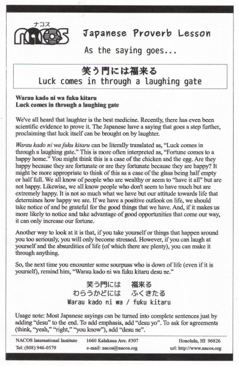

Warau kado ni wa fuku kitaru
Luck comes in through a laughing gate
We've all heard that laughter is the best medicine. Recently, there has even been scientific evidence to prove it. The Japanese have a saying that goes a step further, proclaiming that luck itself can be brought on by laughter.
Warau kado ni wa fuku kitaru can be literally translated as, “Luck comes in through a laughing gate.” This is more often interpreted as, “Fortune comes to a happy home.” You might think this is a case of the chicken and the egg. Are they happy because they are fortunate or are they fortunate because they are happy? It might be more appropriate to think of this as a case of the glass being half empty or half full. We all know of people who are wealthy or seem to “have it all” but are not happy. Likewise, we all know people who don't seem to have much but are extremely happy. It is not so much what we have but our attitude towards life that determines how happy we are. If we have a positive outlook on life, we should take notice of and be grateful for the good things that we have. And, if it makes us more likely to notice and take advantage of good opportunities that come our way, it can only increase our fortune.
Another way to look at it is that, if you take yourself or things that happen around you too seriously, you will only become stressed. However, if you can laugh at yourself and the absurdities of life (of which there are plenty), you can make it through anything.
So, the next time you encounter some sourpuss who is down of life (even if it is yourself), remind him, “Warau kado ni wa fuku kitaru desu ne.”
Usage note: Most Japanese sayings can be turned into complete sentences just by adding “desu” to the end. To add emphasis, add “desu yo”. To ask for agreements (think, “yeah,” “right,” “you know”), add “desu ne”.

| © 1995-2013 NACOS International Institute. All Rights Reserved. |